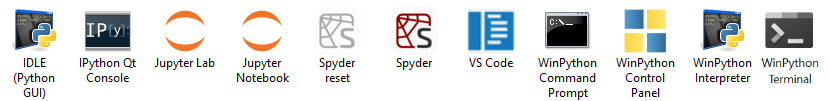
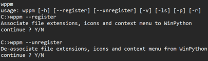

Download — WinPython 2026-03
Released 22 August 2026, built entirely in GitHub Actions. 64-bit only. Every installer is a self-extracting 7-Zip archive: there is no setup wizard, it just unpacks a folder.
Python 3.13.15, 3.14.7 and 3.15.0rc1 · what changed · the exact version of every package is in the packages link on each build below.
Python 3.14 Recommended
WinPython 3.14.7.0 — Python 3.14.7. This is the one we will keep updating over the coming year, so start here unless you have a reason not to.
The full scientific environment: Spyder, JupyterLab, the Qt stack, the data and AI libraries.
Free-threaded (no GIL) build. No Qt stack, and a number of binary packages are still missing upstream.
Python 3.13 Previous
WinPython 3.13.15.0 — Python 3.13.15. Still built, and the safest bet if a dependency you need has no 3.14 wheel yet.
The full scientific environment, on Python 3.13.
Bare portable Python plus pip and wppm. Start here and add exactly what you need.
Python 3.15 Preview
WinPython 3.15.0.4 — Python 3.15.0rc1. For trying the next Python early.
On 3.15.0rc1 only about 60 % of the usual slim package set has wheels yet, so shipping a 400 MB half-empty installer would mislead more than it helps. The package sets were still resolved and locked — build them yourself and you get exactly what our builder got.
All files: GitHub release · SourceForge · checksums for every file (MD5, SHA-1, SHA-256, blake2b) in md5_sha1.txt.
Which build should I take?
Two decisions, and only two: how much do you want preinstalled, and do you want the free-threaded interpreter. The suffix on the file name is just those two answers.
| Suffix | Size | What is inside | Take it if |
|---|---|---|---|
| dot | ~18 MB | Python, pip, wppm, the launchers. Nothing else. |
You install your own dependencies, or you want a small base to ship to others. |
| slim | ~670 MB | Around 1 000 packages: the scientific stack, Spyder, JupyterLab, the Qt stack, data and LLM libraries. | You want to open Spyder or JupyterLab five minutes from now with nothing left to install. |
| dotf / slimf | ~18 MB / ~430 MB | The same, on the free-threaded (no-GIL) interpreter. slimf has no Qt stack yet. |
You are testing free-threading. Expect gaps: many packages still have no free-threaded wheels. |
| whl | — | A dot build shipping an offline wheelhouse instead of an installed environment. |
Not built in 2026-03. Present in earlier releases; the lock files now cover the same need. |
.exe and .7z / .zip hold identical content — the .exe is only a self-extracting archive, so use whichever your download policy allows.
The package set, without the 670 MB
Every WinPython build now publishes the exact package set it was made of, twice: as a pylock.toml (PEP 751) and as a hash-pinned requirements file. Both are a few hundred kilobytes, both pin every wheel by hash. If you already have a Python, you do not need our installer at all.
Install the 2026-03 slim set into any Python 3.14 — hash-pinned requirements, works with pip today:
pip install --no-deps --require-hashes --no-warn-script-location ^
-r https://raw.githubusercontent.com/winpython/winpython/17.12.20260522/WinPython/changelogs/requir.64-3_14_7_0slim.txtOr from the lock file, once your installer speaks PEP 751:
pip install --no-deps --require-hashes --no-warn-script-location ^
-r pylock.64-3_14_7_0slim.tomlOr stage an offline wheelhouse first, to install on machines with no internet:
pip download --dest C:\Wheelhouse --no-deps --require-hashes -r requir.64-3_14_7_0slim.txt
pip install --no-deps --no-index --find-links=C:\Wheelhouse --require-hashes -r requir.64-3_14_7_0slim.txtThis is what makes a WinPython release reproducible rather than merely downloadable, and it is the direction we are moving in: a build is now defined by its lock file, and the binary is one convenient way — not the only way — to obtain it. The 3.15 slim set above is the first that exists purely as a lock file.
| Build | pylock.toml | requirements + hashes | Package list |
|---|---|---|---|
| 3.13.15.0 slim | pylock | requir | list |
| 3.13.15.0 dot | pylock | requir | list |
| 3.14.7.0 slim | pylock | requir | list |
| 3.14.7.0 slimf | pylock | requir | list |
| 3.14.7.0 dot / dotf | pylock · pylock f | requir · requir f | list |
| 3.15.0.4 dot | pylock | requir | list |
| 3.15.0.4 slim / slimf (no binary) | pylock · pylock f | requir · requir f | list |
Lock and requirement files for every build of the cycle, betas included, live in winpython/portable/cycle_2026_03. Want a different package set? Fork the repository, edit the requirements, and run the build workflow in your own GitHub Actions.
What WinPython is
A free, open-source, portable distribution of Python for Windows 10/11, aimed at scientific, data and educational work.

slim build gives you on first launch.-
Non-invasive
Lives entirely in its own directory. No installer, no registry writes, no PATH surgery. Delete the folder and it is gone.
-
Portable
Move the folder to a local disk, a network share or a USB drive and it keeps working, along with most application settings.
-
Side by side
Install as many WinPythons as you want on one machine. Each is isolated and self-consistent, and they can be different Python versions.
-
Yours to modify
Add packages with
pipor wppm, zip the folder, hand it to your students or your colleagues. -
Built in the open
Every published build comes out of a GitHub Actions run you can read, fork and re-run yourself.
-
Registered only if you ask
Optionally associate
.pyfiles, add Edit with Spyder to the context menu, and declare WinPython as a standard Python distribution — see below.
Portable or not, the choice is yours
WinPython is a portable application, so by default it does not integrate into Windows Explorer. If you want that integration, the WinPython Control Panel or WPPM can register the distribution with Windows: file associations for .py and .pyc, Python icons in Explorer, Edit with IDLE / Edit with Spyder context menu entries, and an entry in the registry so standard Python installers can see it. That is exactly what the official Python installer does — so you can have it both ways.

Good to know
Keep the WinPython base directory path shorter than about 37 characters — for example C:\Users\you\Downloads\WinPython.
You may need the Microsoft Visual C++ Redistributable if it is not already on the machine.
Windows 7 is long gone: the last build reported to work there is WinPython64-3.8.9.0.
Elsewhere
Documentation
Wiki — installation, environment variables, WPPM, control panel.
Motivation and concept — why WinPython works the way it does.
Source and builds
github.com/winpython — toolchain, changelogs, lock files.
Releases · SourceForge mirror
Ask, report, follow
Discussion group · Issue tracker
All past releases · Checksums